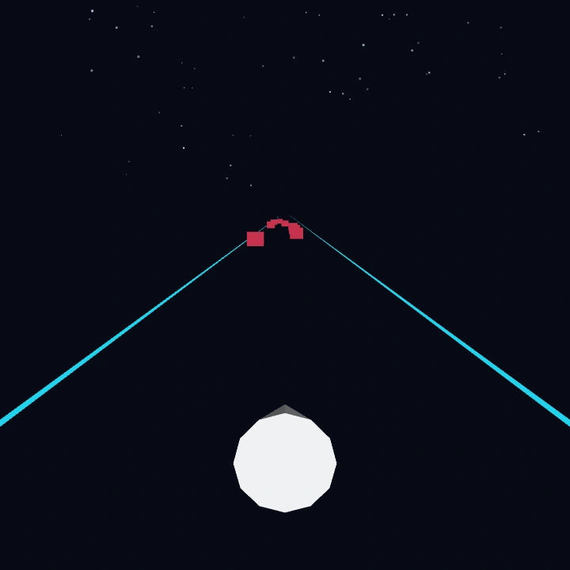
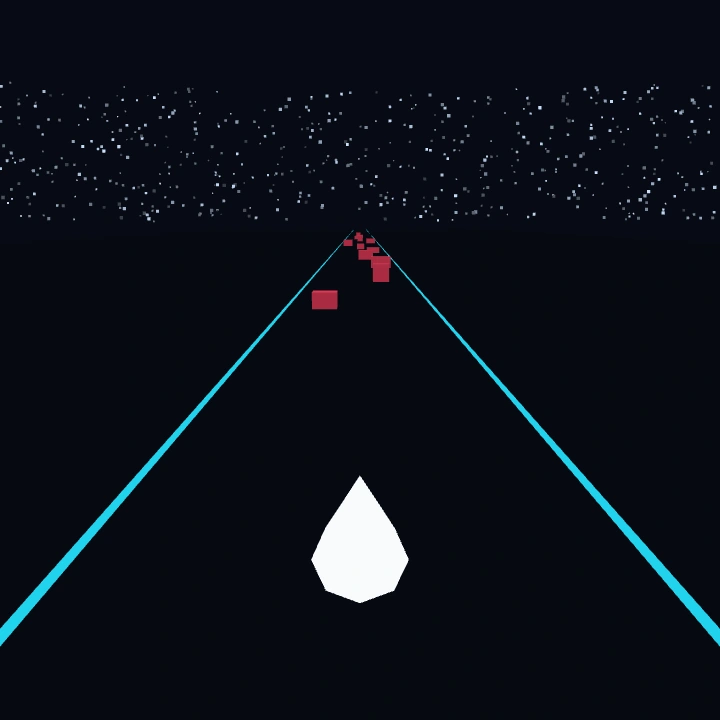

Orbit Runner / Game brief
The prompt asked for a cone.
Both agents built a working game. The ship on the left looks like a disc. The one on the right shows the cone from behind.
Inspect the two runs



A second opinion for
oh-my-pi coding agents.
Orbit Runner / Game brief
Both agents built a working game. The ship on the left looks like a disc. The one on the right shows the cone from behind.
Inspect the two runs

At the copy desk
The author asked for active voice. Jevstice flagged the passive sentence, and the agent named the actor in a revision. The judge also flagged that revision.
Watch the text review“Planned writes are shown, and no files are written.”
“The export command lists the planned writes. The export command creates no files.”
Jevstice records what a judge found in the agent's work. A finding does not stop the agent.